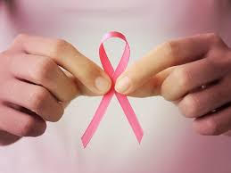

Outubro Rosa é um movimento internacional de conscientização para o controle do câncer de mama, criado no início da década de 1990 pela Fundação Susan G. Komen for the Cure.
A data, celebrada anualmente, tem o objetivo de compartilhar informações e promover a conscientização sobre a doença; proporcionar maior acesso aos serviços de diagnóstico e de tratamento e contribuir para a redução da mortalidade.
Desde 2020, com a pandemia COVID-19, os grupos que atuam em câncer de mama tiveram que repensar suas campanhas do Outubro Rosa e aumentar sua presença virtual. Por meio de intervenções, campanhas e mensagens inovadoras, eles mostraram que a promoção da saúde pública pode assumir várias formas e gerar um forte impacto no acesso à saúde. Qual a melhor forma de adaptar uma campanha? Por que a parceria com outros grupos pode aumentar o alcance das mensagens compartilhadas? Como avaliar o impacto de uma campanha virtual?
O objetivo da campanha é compartilhar informações sobre o câncer de mama e, mais recentemente, câncer do colo do útero, promovendo a conscientização sobre as doenças, proporcionando maior acesso aos serviços de diagnóstico e contribuindo para a redução da mortalidade.
O nome da campanha remete à cor do laço que é um símbolo internacional usado por indivíduos, empresas e organizações na luta e prevenção do câncer de mama. É por esse motivo que durante esse mês a cor rosa ilumina a fachada de diversas instituições públicas e privadas iluminam suas fachadas com objetivo promover indicar a adesão ao movimento.
O diagnóstico precoce ainda é o maior aliado para o tratamento eficaz do câncer de mama. Quando identificado cedo pode ser tratado, impedindo que o tumor alcance outros órgãos.
O câncer de mama pode ser detectado em fases iniciais, em grande parte dos casos, aumentando assim as chances de tratamento e cura.
O câncer de mama pode ser detectado em fases iniciais, em grande parte dos casos, aumentando assim as chances de tratamento e cura.
É importante que as mulheres fiquem atentas a qualquer alteração suspeita na mama,. Quando a mulher conhece bem suas mamas e se familiariza com o que é normal para ela, pode estar atenta a essas alterações e buscar o serviço de saúde para investigação diagnóstica.
A orientação atual é que a mulher faça a observação e a autopalpação das mamas sempre que se sentir confortável para tal (no banho, no momento da troca de roupa ou em outra situação do cotidiano), sem necessidade de uma técnica específica de autoexame, em um determinado período do mês, como preconizado nos anos 80. Essa mudança surgiu do fato de que, na prática, muitas mulheres com câncer de mama descobriram a doença a partir da observação casual de alterações mamárias e não por meio de uma prática sistemática de se autoexaminar, com método e periodicidade definidas.
A detecção precoce do câncer de mama pode também ser feita pela mamografia, quando realizada em mulheres sem sinais e sintomas da doença, numa faixa etária em que haja um balanço favorável entre benefícios e riscos dessa prática (mamografia de rastreamento).
A recomendação no Brasil, atualizada em 2015, é que a mamografia seja ofertada para mulheres entre 50 e 69 anos, a cada dois anos. Essa é também a rotina adotada na maior parte dos países que implantaram o rastreamento do câncer de mama e tiveram impacto na redução da mortalidade por essa doença.